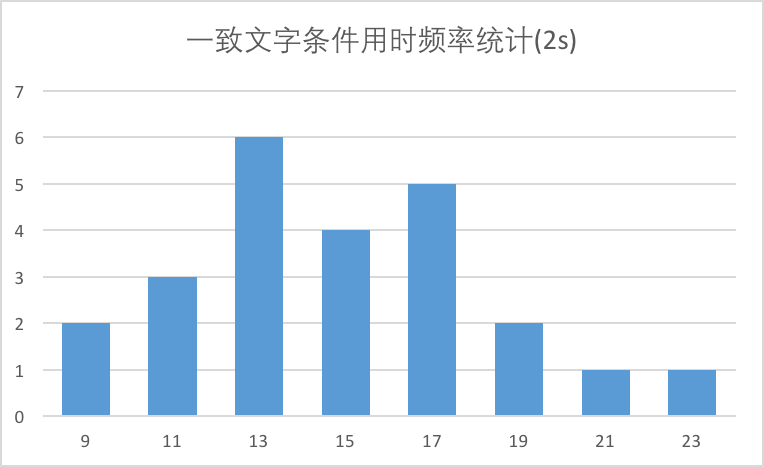

自变量：文字与打印颜色的一致性
因变量：说出墨色名称的时间
\(\mu_{con}\)：表示一致文字条件下读出墨色名称的总体时间均值
\(\mu_{incon}\)：表示不一致文字条件下读出墨色名称的总体时间均值
零假设(\(H_{0}\))：\(\mu_{con} = \mu_{incon}\)，表示一致文字条件下和不一致文字条件下读出墨色名称的总体时间均值相同，不具统计显著性。
对立假设(\(H_{A}\))：\(\mu_{con} \not= \mu_{incon}\)，表示一致文字条件下和不一致文字条件下读出墨色名称的总体时间均值不相同。
其中\(\mu_{con}\)和\(\mu_{incon}\)分别表示一致性条件和不一致性条件下的总体均值。
由于样本数量较少（n=24）并且总体标准差\(\sigma\)未知，因此选择 t 检验 ；
实验数据是两组相同实验对象在不同条件下的测试结果，即两个样本（一致文字条件和不一致文字条件）是相依样本，因此可以用配对 t 检验，通过两个样本集的差异来判断总体是否不同。
因为对立假设为\(\mu_{con} \not= \mu_{incon}\)，所以选择双尾检验， 选用\(\alpha = 0.05\)的统计显著水平
\( \bar x_{con} = \frac{12.079 +16.791 +9.564 +8.63 +14.669 +12.238 +14.692 +8.987 +9.401 +14.48 +22.328 +15.298 +15.073 +16.929 +18.2 +12.13 +18.495 +10.639 +11.344 +12.369 +12.944 +14.233 +19.71 +16.004}{24} = 14.051\)
\( \bar x_{incon} = \frac{19.278 +18.741 +21.214 +15.687 +22.803 +20.878 +24.572 +17.394 +20.762 +26.282 +24.524 +18.644 +17.51 +20.33 +35.255 +22.158 +25.139 +20.429 +17.425 +34.288 +23.894 +17.96 +22.058 +21.157}{24} = 22.016\)
先对数据按照从大到小排序。由于样本数量为24，是偶数，所以取第12，13数据的平均值。
\(median_{con} = \frac{14.233+14.48}{2} = 14.3565\)
\(median_{incon} = \frac{20.878+21.157}{2} = 21.0175\)
计算过程见stroopdata.csv
样本标准差\(S = \sqrt{ \frac{1}{n-1} \sum_{i=1}^n (x_i -\bar x)^2}\)
\(S_{con} = 3.559\) （E列和单元格B27）
\(S_{incon} = 4.797\) （F列和单元格C27）
从上图可以看出：不一致文字条件下，读出墨色名称的时间全部都高于一致文字条件下的阅读时间。

从上面2张图可以看出：统计结果基本服从正态分布。
计算过程见stroopdata.csv
首先计算差异均值：\(\bar {diff} = \frac{\sum_{i=1}^n (y_i-x_i)}{n} = 7.965\) (单元格D26)
计算差异的标准差：\(S_{diff} = \sqrt{ \frac{1}{n-1} \sum_{i=1}^n (diff_i -\bar {diff})^2} = 4.865\) (G列和单元格D27)
计算均值标准误差：\(SEM = \frac{S}{\sqrt{n}} = \frac{4.865}{\sqrt{24}} = 0.993\) （单元格D28）
计算t值：\(t = \frac{\bar {diff}}{SEM} = \frac{7.965}{0.993} = 8.021\)（单元格D29）
统计显著水平 \(\alpha = .05\)，自由度 \(df=23\)，执行双尾测试，查表得：\(t_{critical} = 2.069\)。

\(t = 8.021\)，\(t>t_{critical}\)，处于临界区内；\(p < .05\)。
所以该结果是统计显著的，应该拒绝零假设。
Cohen's \(d = \frac{\bar {diff}}{S_{diff}} = \frac{7.965}{4.865} = 1.637\) （单元格D30），表明不一致文字条件的结果和一致文字条件的结果相差1.637个标准偏差，差异显著。
\(r^2 = \frac{t^2}{t^2+df} = \frac{8.021^2}{8.021^2+23} = 0.7366\) (单元格D31), 说明结果差异有73.66%是由于不一致文字条件引起的。